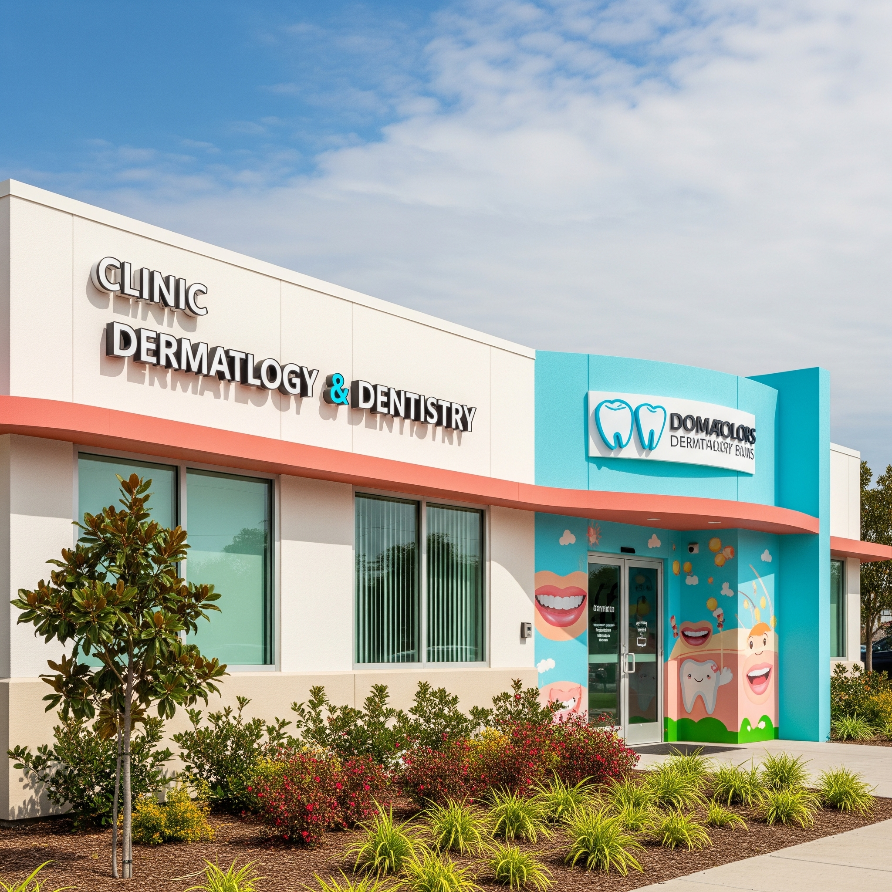
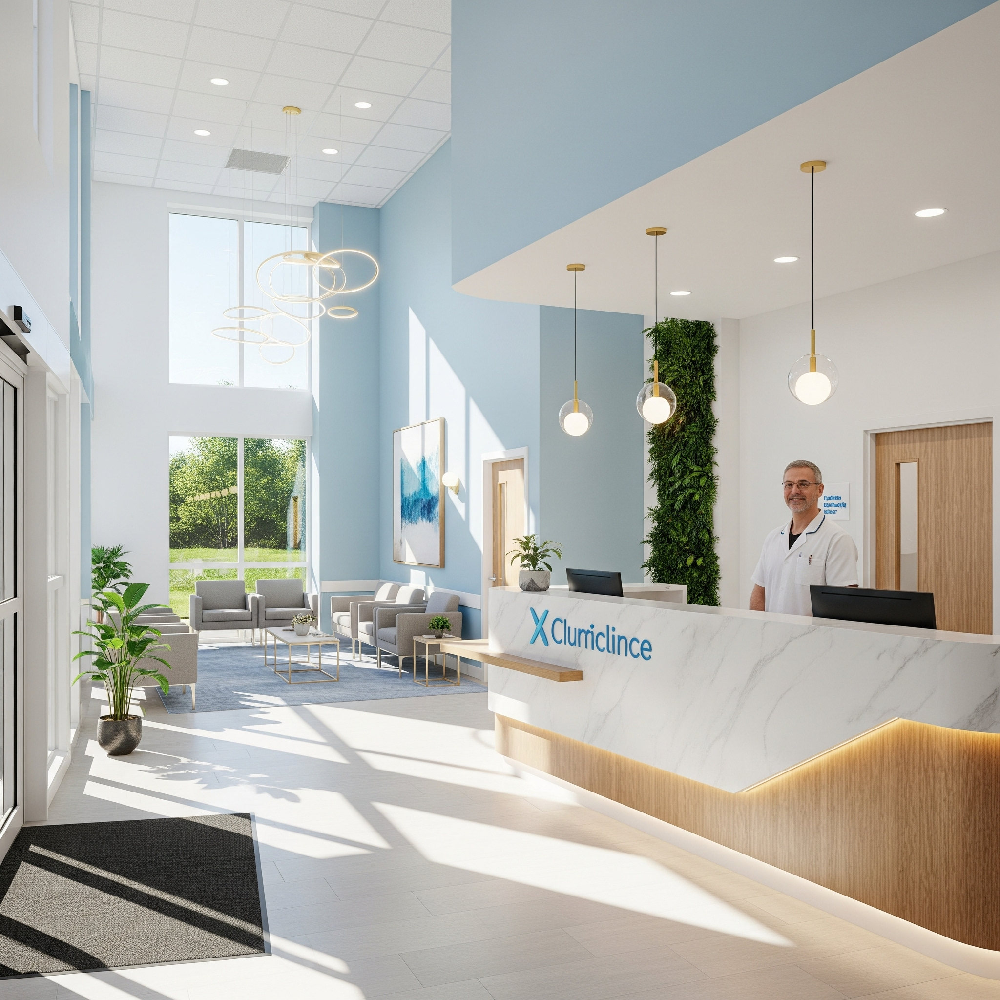
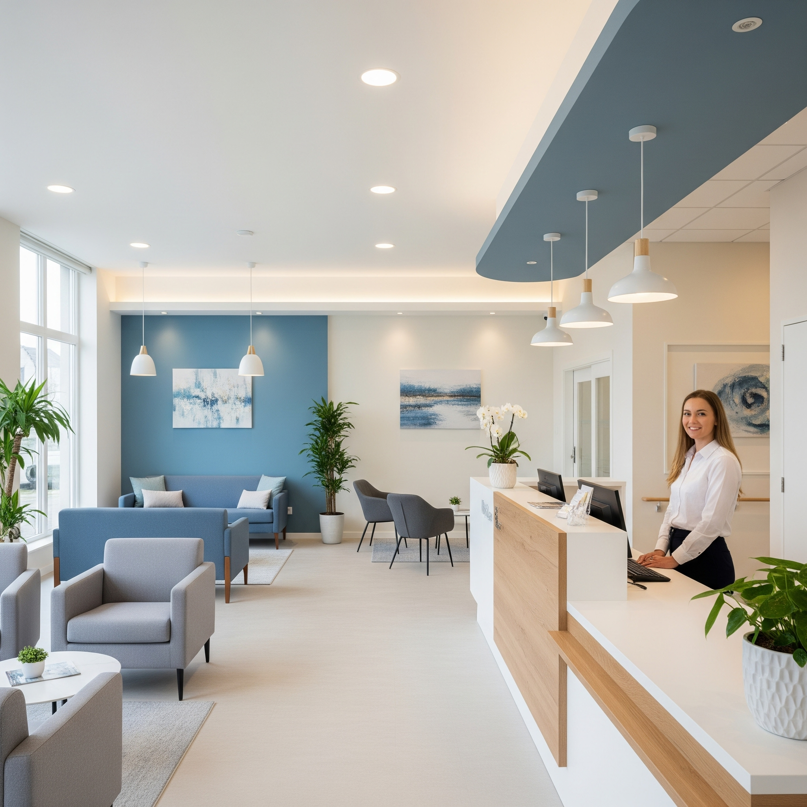
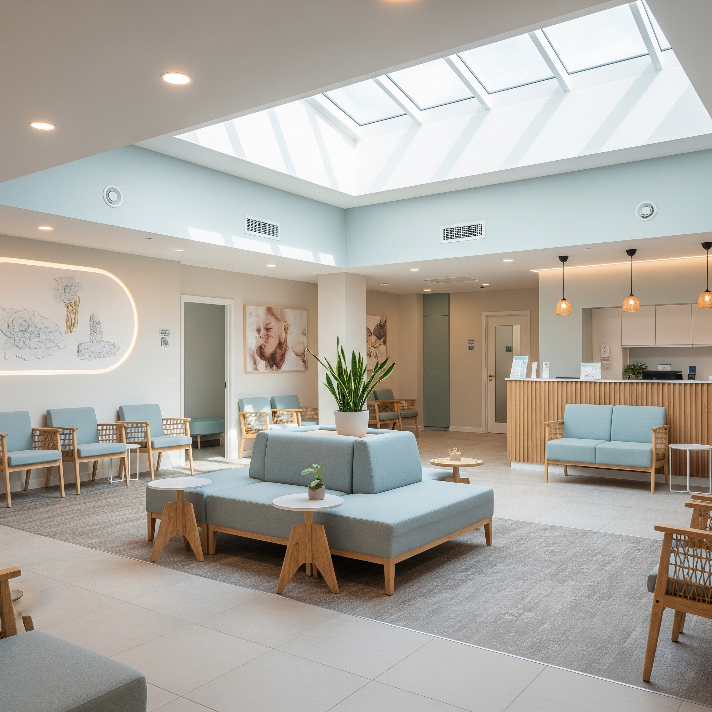
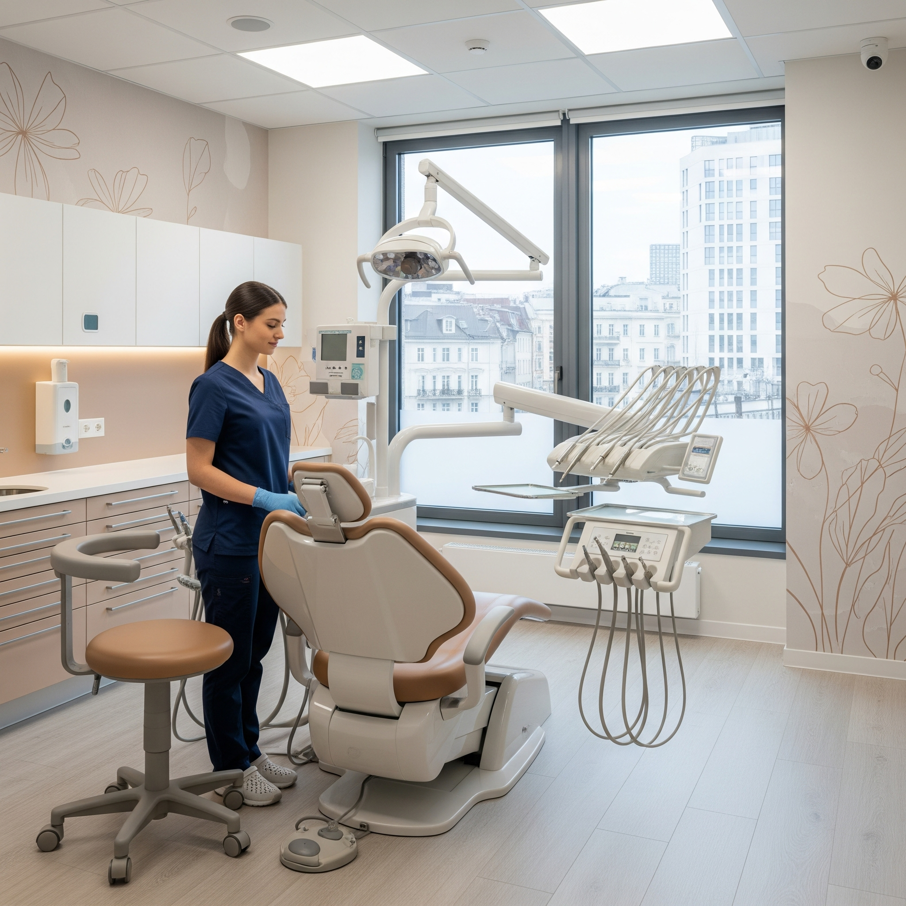
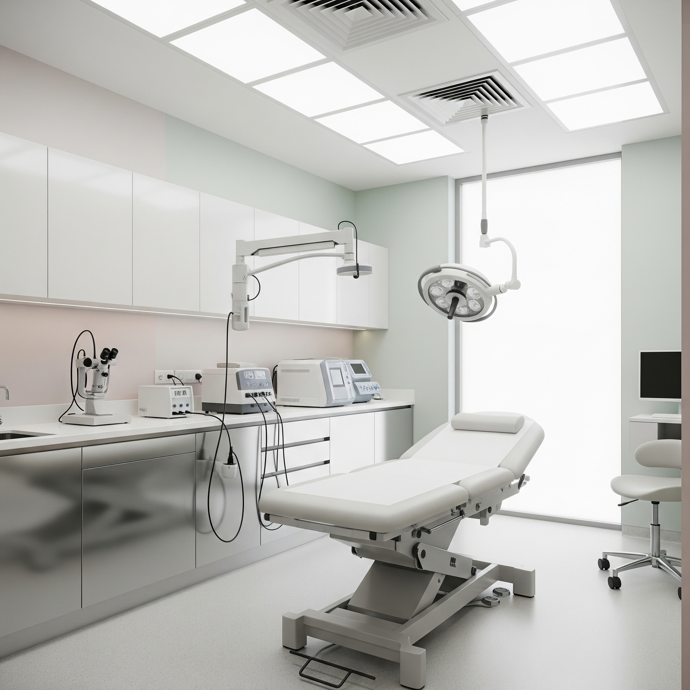

👨⚕️ プロフィール
経験豊富な医師・スタッフが皆様の健康をサポートします
🌸 クリニックの理念
地域の皆様に信頼される医療機関を目指しています
👨⚕️ 医師紹介
専門性の高い医師が、それぞれの分野で最適な治療をご提供します

院長 田中 太郎
歯科医師・歯学博士
経験20年以上
🎓 経歴
1995年
東京歯科大学 歯学部卒業
1995年〜1998年
東京歯科大学附属病院 研修医
1998年〜2005年
都内歯科医院 勤務医
2005年
さくらクリニック 開院
🏆 資格・所属学会
歯科医師免許
日本歯科医師会 会員
日本歯周病学会 専門医
日本口腔インプラント学会 会員

副院長 佐藤 花子
皮膚科医師・医学博士
皮膚科専門医
🎓 経歴
2000年
慶應義塾大学 医学部卒業
2000年〜2002年
慶應義塾大学病院 研修医
2002年〜2010年
都内総合病院 皮膚科勤務
2010年
さくらクリニック 副院長就任
🏆 資格・所属学会
医師免許
皮膚科専門医
日本皮膚科学会 会員
日本小児皮膚科学会 会員
日本アレルギー学会 会員
🏥 クリニック施設
清潔で快適な環境で、安心して治療をお受けいただけます

🏢 クリニック外観
さくらビル2階に位置し、駅から徒歩5分の好立地。駐車場も完備しております。

🚪 エントランス
明るく開放的なエントランスで、患者様をお迎えいたします。

🏢 受付
笑顔のスタッフがお迎えし、丁寧な対応でサポートいたします。

🪑 待合室
ゆったりとした空間でリラックスしてお待ちいただけます。

🦷 歯科診察室
最新の歯科機器を完備し、精密で安全な治療を提供いたします。

✨ 皮膚科診察室
プライバシーに配慮した個室で、安心して診察をお受けいただけます。
👥 スタッフ紹介
チーム一丸となって、患者様をサポートいたします

山田 美穂
歯科衛生士（主任）
15年の経験を持つベテラン歯科衛生士です。予防歯科と患者様のケアを担当しています。

鈴木 良子
看護師
皮膚科診療のサポートを行っています。患者様に安心していただけるよう心がけています。

高橋 さくら
受付・事務
患者様との最初の接点として、笑顔でお迎えし、丁寧な対応を心がけています。

中村 花音
歯科助手
治療のアシスタントと院内の清掃・消毒を担当し、安全で清潔な環境作りに努めています。
📈 クリニックの歩み
2005年の開院から現在まで、地域医療に貢献し続けています
2005年
🏥 さくらクリニック開院
歯科診療から始まり、地域医療の第一歩を踏み出しました
2008年
🔧 院内リニューアル
最新医療機器を導入し、より質の高い診療環境を整備
2010年
✨ 皮膚科診療開始
副院長就任により、皮膚科診療を開始し診療科目を拡大
2015年
💻 Web予約システム導入
患者様の利便性向上のため、24時間予約システムを導入
2020年
🛡️ 感染症対策設備強化
安心・安全な診療環境のため、感染症対策を徹底強化
2024年
🎉 開院19周年
地域の皆様に支えられ、19周年を迎えました